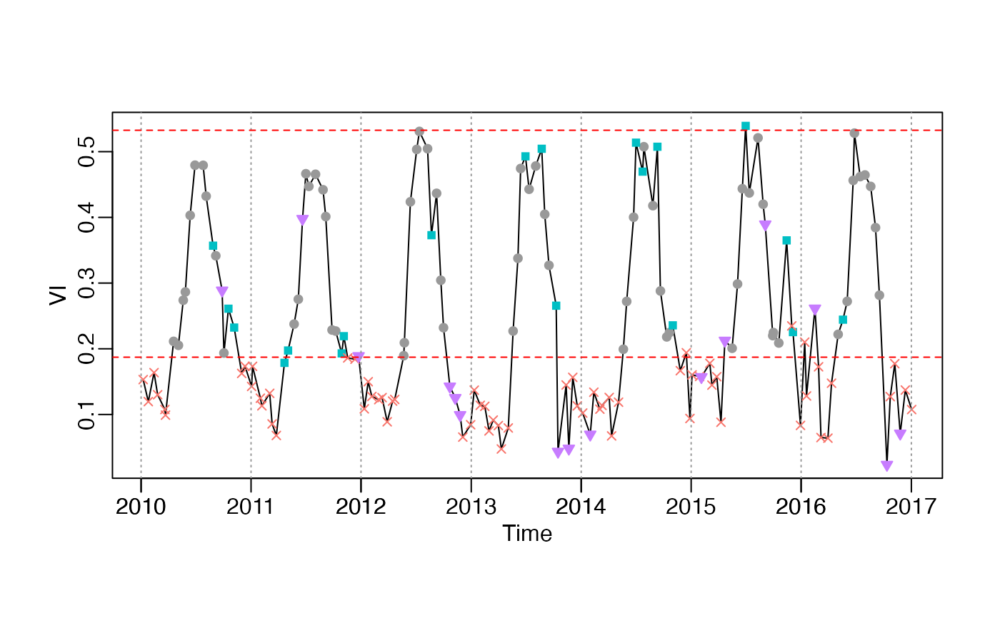

Plot INPUT returned by check_input
plot_input(INPUT, wmin = 0.2, show.y0 = TRUE, ylab = "VI", ...)
| INPUT | A list object with the elements of |
|---|---|
| wmin | Double, minimum weigth (i.e. weight of snow, ice and cloud). |
| show.y0 | boolean. Whether to show original time-series |
| ylab | y axis title |
| ... | other parameter will be ignored. |
library(phenofit) data("MOD13A1") dt <- tidy_MOD13(MOD13A1$dt) st <- MOD13A1$st sitename <- dt$site[1] d <- dt[site == sitename, ] # get the first site data sp <- st[site == sitename, ] # station point # global parameter IsPlot = TRUE nptperyear = 23 ypeak_min = 0.05 dnew <- add_HeadTail(d, nptperyear = nptperyear) # add one year in head and tail INPUT <- check_input(dnew$t, dnew$y, dnew$w, d$QC_flag, nptperyear, maxgap = nptperyear/4, alpha = 0.02, wmin = 0.2)#> Warning: longer object length is not a multiple of shorter object lengthplot_input(INPUT)